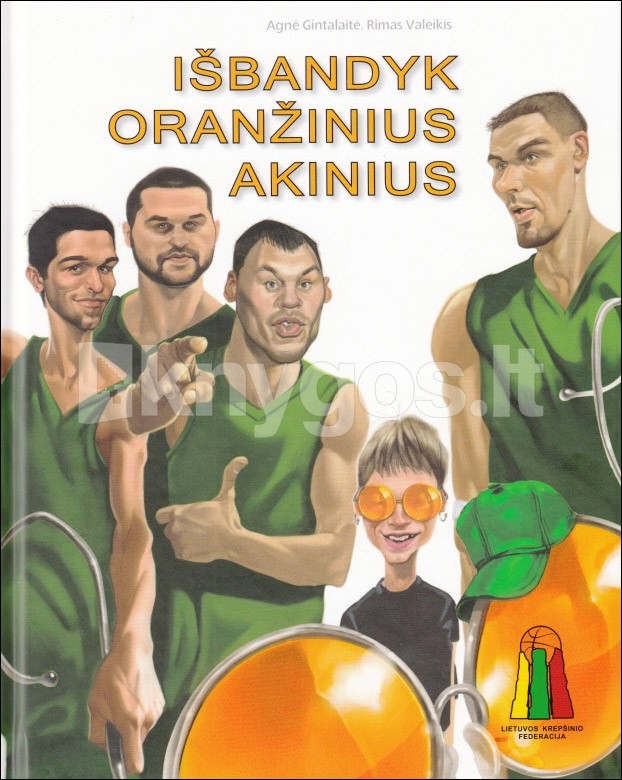

Madingi akiniai už ypač patrauklią kainą - Fielmann
 LT LV RU lt LV RU Akiniai
LT LV RU lt LV RU Akiniai
Fielmann kolekcija
Nemokamų rėmelių kolekcija Akinių rėmeliai moterims Akinių rėmeliai vyrams Akinių rėmeliai vaikams Garsūs prekių ženklaiAkiniai įvairiems poreikiams
Akiniai matymui į tolį Akiniai darbui kompiuteriu Akiniai skaitymui Akiniai matymui įvariu atstumu Akiniai sportui ir laisvalaikiuiNaudinga
Akinių kelias Regos sutrikimai Apie rėmelius Apie akinių lęšius Akinių priežiūra Saulės akiniaiKolekcijos
Saulės akiniai moterims Saulės akiniai vyrams Saulės akiniai vaikamsSaulės akinių lęšiai
Korekciniai saulės akiniai Apie saulės akinių lęšius Kontaktiniai lęšiaiKONTAKTINIŲ LĘŠIŲ RŪŠYS
Vienadieniai Dviejų savaičių Mėnesio Spalvoti Specialūs Garsūs prekės ženklaiPRIEŽIŪRA
Paslaugos Priežiūros taisyklės Priežiūros priemonės Apie FielmannApie Fielmann
Fielmann Europoje Paslaugos ir garantijos Darbuotojai Duomenų apsauga Pasiūlymai Kontaktai Savitarna Registruokis patikrai SavitarnaAkinių rėmeliai moterims
ŽiūrėtiAkinių rėmeliai vyrams
ŽiūrėtiSaulės akiniai
ŽiūrėtiAkinių rėmeliai vaikams
ŽiūrėtiNemokamų rėmelių kolekcija
ŽiūrėtiPasiūlymai ir naujienos
Regą tikriname atsakingai ir saugiai Dovanokite puikų matymą Akinių komplektas nuo 55 Eur Paslaugos ir garantijos Akiniai darbui kompiuteriu Madingi akiniai vaikamsAkinių rėmeliai moterims
POLAR 273 FA BD 352 PANTO CL MC 39 TR BALDESSARINI 1701 OBRA 463 CL OBRA 463 CL DaugiauAkinių rėmeliai vyrams
2155 FLEX CL MC 176 TR INTER 2201 FA BD 365 MOD FA MC 39 TR BD 364 FA Daugiau Korekciniai saulės akiniai Poliarizaciniai lęšiai Akinių rėmeliai Saulės akiniai Kontaktiniai lęšiaiAkinių pasaulis: Fielmann.
Kiekvienoje „Fielmann" optikoje rasite visą akinių pasaulį: daugiau negu 2000 akinių rėmelių, madingą ir nebrangią „Fielmann" kolekciją, žymiausius prekės ženklus ir išskirtinio dizaino pavyzdžius. Čia galėsite įsigyti korekcinius akinius moterims, vyrams ir vaikams su aukštos kokybės akinių lęšiais. „Fielmann" optikose taip pat rasite kokybiškus saulės akinius su patikima apsauga nuo akinimo ir ultravioletinių spindulių – kad Jūsų akys galėtų mėgautis vasara ir puikiu regėjimu.Mada, kokybė ir teisinga kaina
Nepriklausomai nuo to kokie akiniai, rėmeliai ar lęšiai Jums reikalingi, mūsų optikos specialistai padės Jums išsirinkti geriausiai Jūsų poreikius atitinkantį variantą už Jums palankią kainą.
Inovatyvūs regėjimo korekcijos sprendimai, nemokamo regėjimo patikrinimo paslauga, garantiniai ir žemiausios kainos įsipareigojimai – tai, dėl ko tik pradėjęs savo veiklą „Fielmann” tapo mylimas klientų. Šiandien „Fielmann” taip pat ir optikos rinkos lyderis Europoje.
Apie „Fielmann"
Kodėl verta rinktis „Fielmann":
nemokamas regos testas nemokamų rėmelių kolekcija nemokama akinių priežiūra trejų metų garantija korekciniams akiniams žemos kainos garantija akiniai išsimokėtinai„Fielmann" paslaugos ir garantijos
Mes Europoje
„Fielmann" yra vienas didžiausių optikos tinklų Europoje – 23 milijonai žmonių nešioja „Fielmann" pirktus akinius. Vokietijoje, „Fielmann" tėvynėje, kas antri parduodami akiniai yra iš „Fielmann" optikos.
„Klientas esi tu" – tai viena iš pamatinių „Fielmann" vertybių. Visuomet ieškome geriausių sprendimų, atitinkančių kliento poreikius ir užtikrinančių ilgalaikį komfortišką regėjimą.
Apie „Fielmann" Europoje
KONTAKTAI APIE FIELMANN REKVIZITAI DARBUOTOJAI DUOMENŲ APSAUGA SVETAINĖS ŽEMĖLAPIS RAŠYKITE MUMS: info@fielmann.lt © 2020. Visos teisės saugomos Sprendimas: TEXUS Siekdami sužinoti puslapio lankomumą, svetainėje naudojame „Google analytics” slapukus. Privatumo politika. Sutinku Nesutinku Registruokis patikrai
